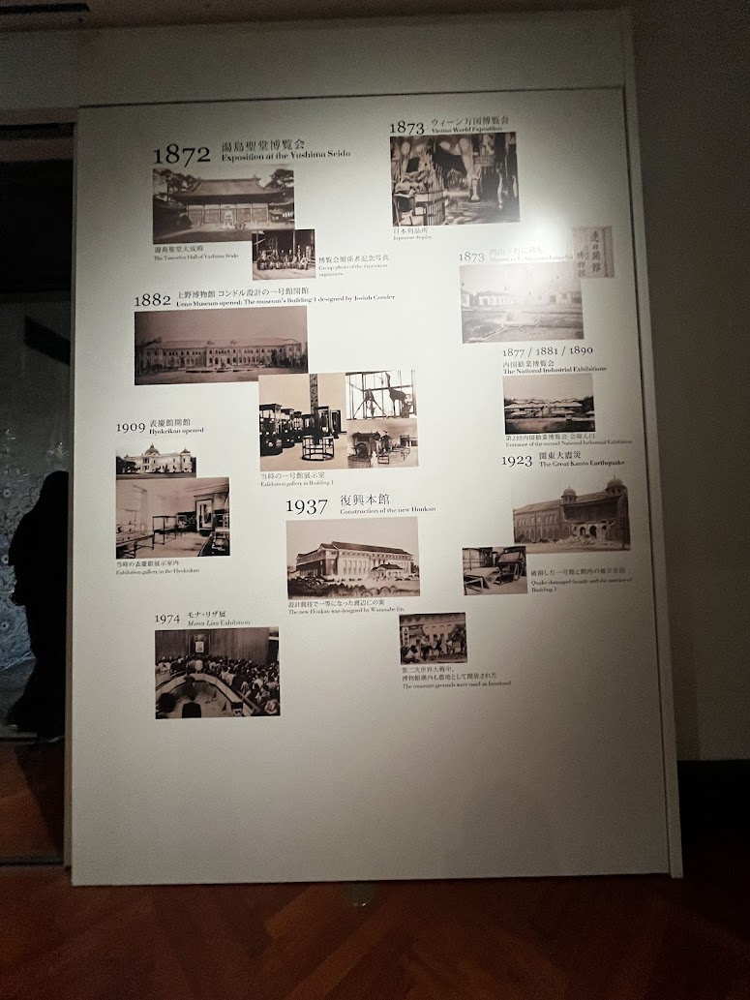
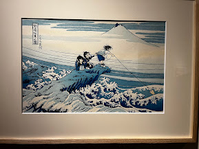
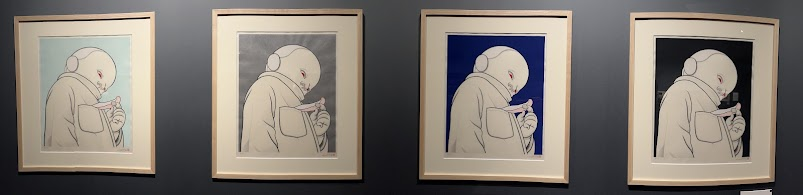
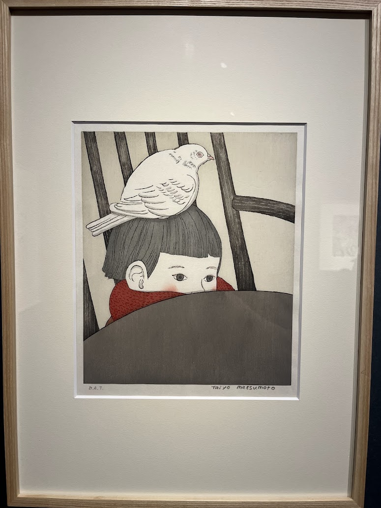
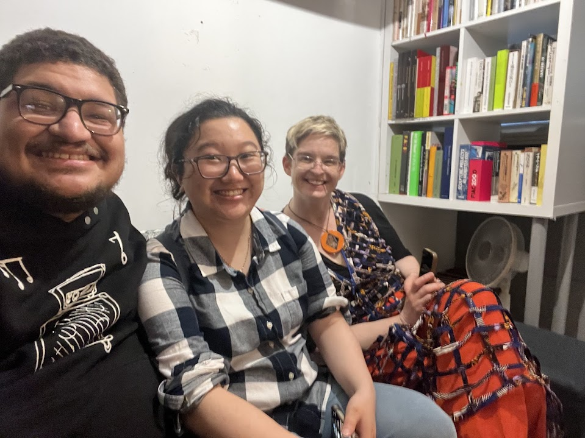
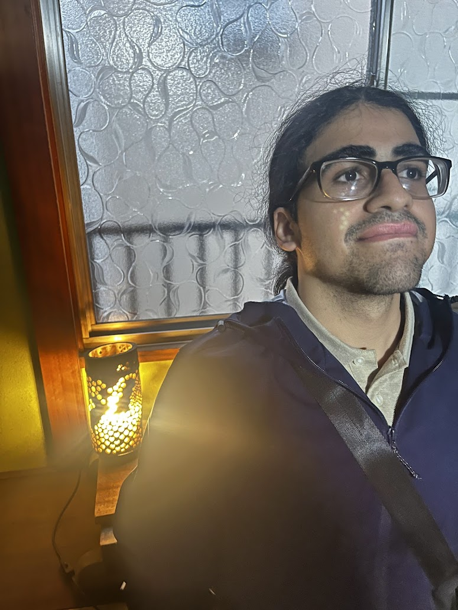
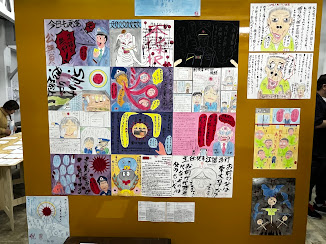
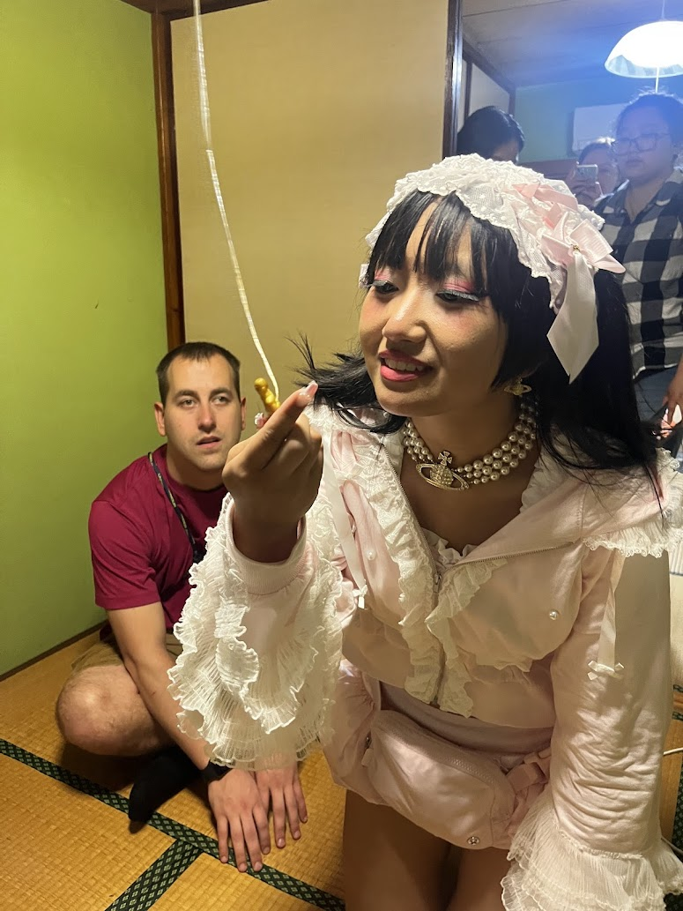
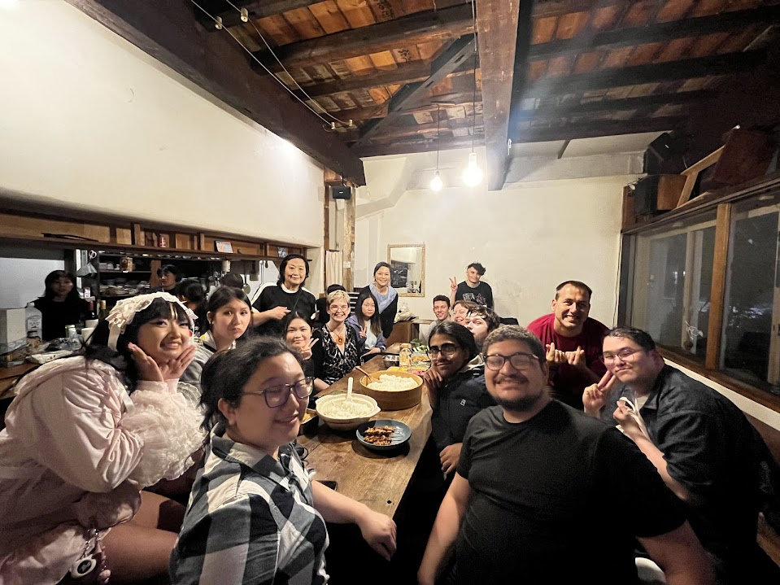
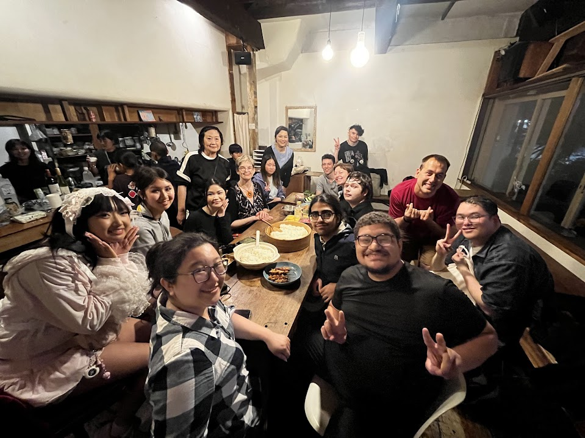

Day 4 – Ueno, Tokyo
For our second day of the study abroad trip, we visited the Tokyo National Museum, where we had the opportunity to learn about the history of washi paper and explore the intricate world of woodblock prints. It was fascinating to see how primitive tools and techniques were used to create such beautiful and detailed artwork hundreds of years ago. In contrast, it was also refreshing to see modern artwork from contemporary artists, some of which dated back to just a year ago.
One of the highlights of the museum visit was a short screening that explored the history of anime and how ancient Japanese art helped lay the foundation for the medium I’ve come to love. After the screening and a quick visit to the museum’s gift shop that once again drained my wallet we headed to a quieter, suburban part of Japan: Sumida City.There, we met with an old friend of Professor Yuko Oda and visited a shared house where a student had recently arrived to begin her residency. It was heartwarming to see the incredible number of books the sponsor had collected, and the brutalist-inspired architecture used to house the books was both unique and thought-provoking.
After leaving the house, we walked through several blocks of Sumida City. The area felt much like an American suburb peaceful and quiet, with fewer tall buildings or bright lights. The absence of skyscrapers made it easy to see across neighboring towns and structures, adding to the calm and open feel of the neighborhood.As we continued walking, we came across an impromptu stop: a small exhibit displaying artwork and literature created by Japanese prisoners. This unexpected detour turned out to be one of the most memorable parts of the day. We arrived just before closing time, and I’m grateful we didn’t miss it. Many of the art pieces were powerful and deeply expressive surprisingly, almost half of the works depicted Jesus Christ, while others leaned more toward abstract and contemporary styles that invited longer contemplation. It was a striking reminder that art can be created by anyone, anywhere, even within the confines of a prison cell.
We wrapped up our visit and headed to the final stop of the day: a local restaurant where our scheduled welcome dinner took place. This dinner turned out to be one of the best meals I’ve had on the trip so far. The atmosphere was lively and unforgettable salsa and reggaeton music filled the space, and the energy of the restaurant was contagious. The food was incredible, and we had the opportunity to create our own rolls using a variety of ingredients such as fish, egg, corn, karaage, and more. What made the dinner even more special were the local children, who sweetly handed out Japanese Pokémon cards to everyone as a gift. It was a touching and joyful end to an already remarkable day.




